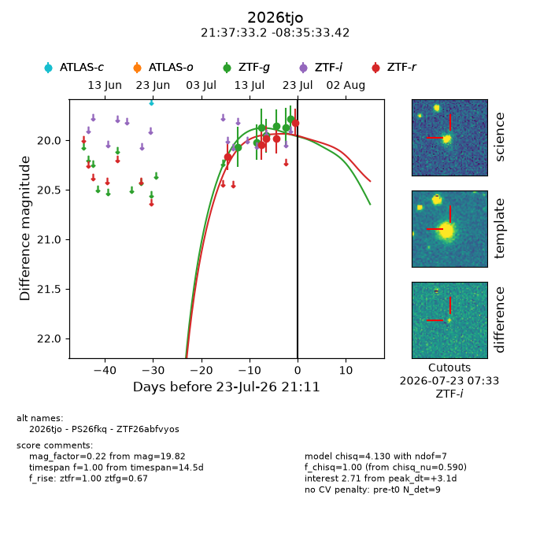
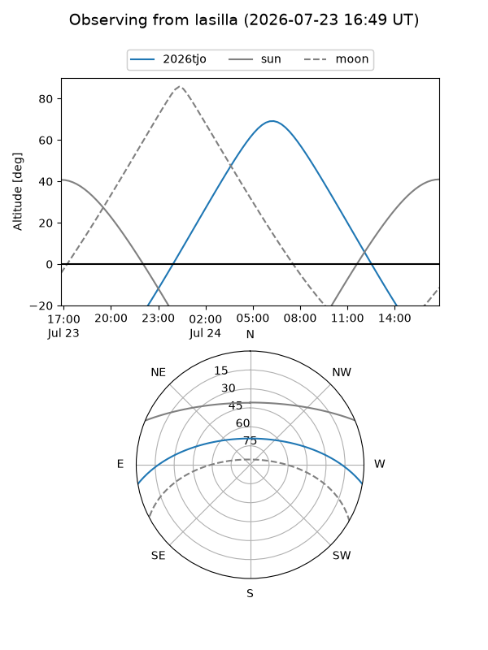
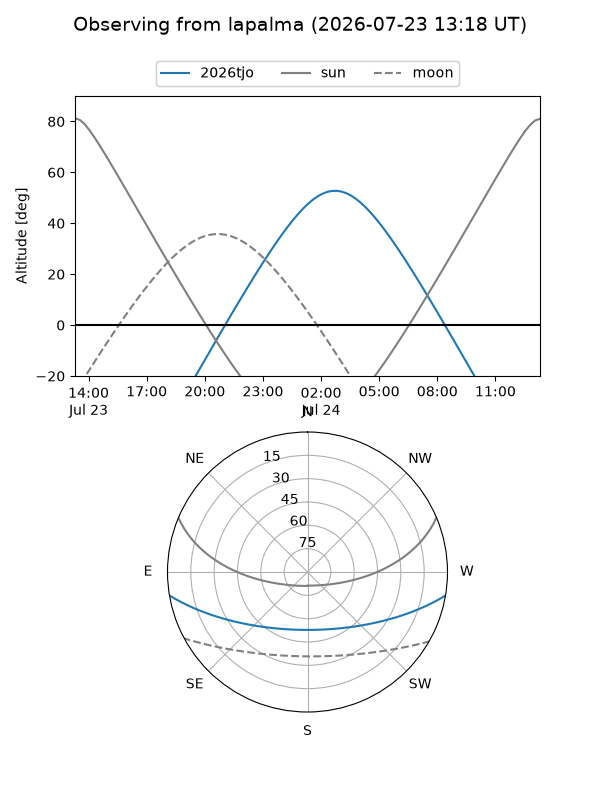
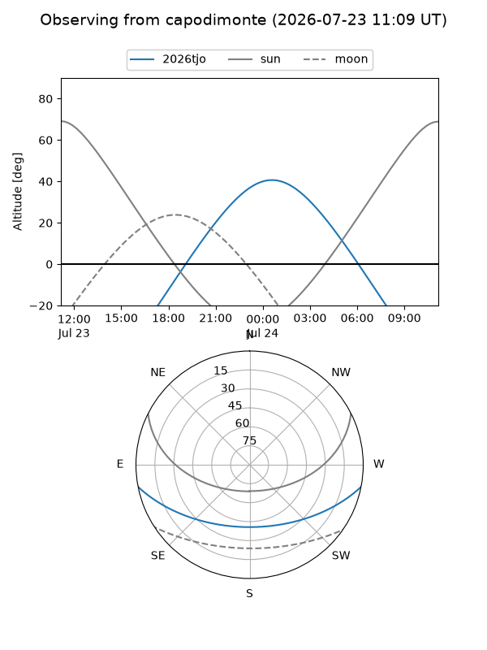
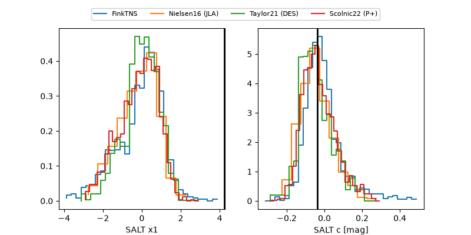

2026tjo
Target 2026tjo at 2026-07-23 21:14
Aliases and brokers:
FINK-ZTF: ztf.fink-portal.org/ZTF26abfvyos
Lasair-ZTF: lasair-ztf.lsst.ac.uk/objects/ZTF26abfvyos
ALeRCE-ZTF: alerce.online/object/ZTF26abfvyos
YSE-PZ: ziggy.ucolick.org/yse/transient_detail/2026tjo
TNS name: wis-tns.org/object/2026tjo
Direct TNS query: direct search
alt names
ZTF26abfvyos (ztf,fink_ztf)
2026tjo (tns,yse)
PS26fkq (panstarrs)
Coordinates:
equatorial (ra, dec) = 324.3883,-8.59262
equatorial (HMS+DMS) = 21:37:33.19,-08:35:33.42
galactic (l, b) = (45.5682,-40.65959)
Flags:
TNS type: nan
peak dt: +3.1
Photometry:
last ztfg=19.79, ztfr=19.82
7 ztfg, 5 ztfr detections
Lightcurve

Visibility



Additional plots
